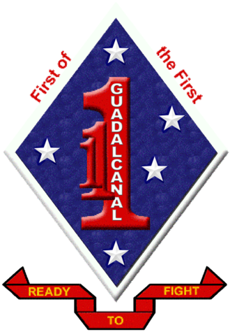
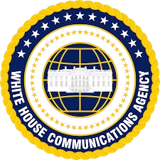

Marine Infantry Team Leader, SGT
1st Battalion 1st Marines
December 2022 - July 2023
Camp Pendleton, California
- Led a team of 4 Marines high-pressure environments, ensuring mission success and team safety.
- Facilitated execution of tactical operations in complex environments, demonstrating strong leadership and strategic thinking.
- Adaptability and resilience in dynamic situations, fostering a cohesive and effective war fighting team.

White House Communications Agent, CPL
White House Communications Agency, USMC
January 2020 - Decemeber 2022
- Secured communication systems for the White House and its staff, ensuring uninterrupted connectivity for critical operations.
- Collaborated with a team to deploy and maintain secure communication infrastructure in any location, U.S. and abroad.
- Upheld strict security measures to protect sensitive information while facilitating effective communication channels.
Marine Security Guard
Marine Barracks Washington
March 2020 - January 2020
- Provided physical security for the highest ranking Marines and Salilors, to include CMC, SGTMAJMC, and CNO as well as Marines stationed abord Marine Barracks Washington, ensuring the safety of personnel and sensitive information.
- Conducted security tours and implemented measures to mitigate risks and enhance the overall security posture of Marine Barracks Washington.
- Trained in emergency response protocols, demonstrating readiness to handle various security situations effectively.